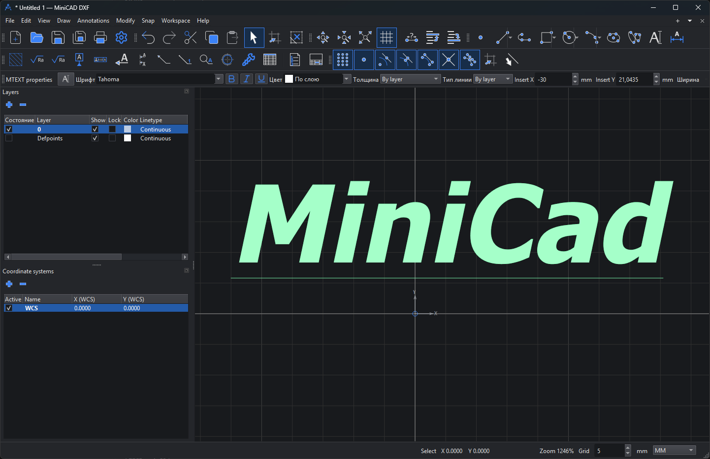

Черчение
Создавайте, редактируйте, измеряйте и упорядочивайте точную геометрию DXF: ввод координат и размеров, объектные привязки, слои и история изменений документа.
Подробнее о возможностяхMiniCAD объединяет 2D-черчение и оформление технических чертежей, прямое твердотельное моделирование B-Rep, траектории фрезерной, токарной обработки и раскроя, а также командную строку.

Создавайте, редактируйте, измеряйте и упорядочивайте точную геометрию DXF: ввод координат и размеров, объектные привязки, слои и история изменений документа.
Подробнее о возможностях
Моделируйте и редактируйте точные твердотельные тела OpenCascade B-Rep, просматривайте сборки STEP и модели STL, передавайте геометрию в черчение или CAM.
Подробнее о возможностяхСоздавайте многолистовые чертежи с размерами, обозначениями и редактируемыми символами стандартного крепежа ISO.
Подробнее о возможностях
Настраивайте инструменты и постпроцессоры, управляйте операциями CAM, формируйте УП и просматривайте траектории.
Подробнее о возможностях
Рассчитывайте траектории фрезерной обработки 2.5D по геометрии DXF с фрезерным инструментом, коррекцией на радиус и настраиваемыми параметрами обработки.
Подробнее о возможностяхХраните фрезы и токарные пластины в одной постоянной библиотеке с обменом через JSON.
Подробнее о возможностяхРассчитывайте двухосевые токарные траектории для цилиндрической заготовки: подрезка, точение профиля, канавки, растачивание и резьба G32.
Подробнее о возможностяхПросматривайте токарные траектории в Play и проверяйте съём материала в Easy G-Code Plot (EGP) перед выводом УП.
Подробнее о возможностяхРаскрой — самостоятельная наладка и категория операций CAM наряду с фрезерной и токарной обработкой.
Подробнее о возможностях
Используйте CAD, 3D-геометрию, CAM и постобработку без графического интерфейса через команды на основе заданий.
Подробнее о возможностяхСоздавайте, редактируйте, измеряйте и упорядочивайте точную геометрию DXF: ввод координат и размеров, объектные привязки, слои и история изменений документа.
| Возможность | Описание |
|---|---|
| Геометрические объекты | Точки, отрезки, полилинии с прямолинейными и дуговыми участками (bulge), прямоугольники, правильные многоугольники, окружности, дуги, эллипсы и кубические сплайны. |
| Вспомогательные построения | Горизонтальные, вертикальные, бесконечные, касательные, параллельные и перпендикулярные прямые; окружности и дуги по точкам, радиусам или углам. |
| Текст | Объекты TEXT и MTEXT с выравниванием, форматированием и переносом строк. |
| Построения по координатам и размерам | Создание геометрических объектов по координатам и размерам. |
| Редактирование | Перемещение, поворот, масштабирование, зеркальное отражение, смещение, обрезка, разрыв, соединение, скругление, фаска и растягивание. |
| Массивы и буфер обмена | Прямоугольные и круговые массивы; копирование, вырезание, вставка и обмен объектами между документами. |
| Параметры объектов | Редактирование размеров и параметров объектов, включая вершины полилиний, управляющие точки сплайнов и геометрию прямоугольников с ограничениями. |
| Выбор объектов | Выбор по типу объекта DXF, поиск совпадающих объектов и изменение порядка отображения. |
| Измерения | Расстояние между точками, длина, радиус и диаметр объектов, явное задание диаметра окружности и дуги, площадь замкнутых объектов. |
| Объектные привязки | Сетка, конечные и средние точки, центры, пересечения, ближайшие точки и другие поддерживаемые режимы привязки. |
| Системы координат | Мировая и несколько локальных систем координат; метрические и дюймовые единицы для ввода и отображения в CAD. |
| Слои и документы | Видимость, блокировка и свойства слоёв; несколько документов и листов с независимыми историями изменений. |
| Отмена и восстановление | Отмена и повтор действий, откат транзакций, защита при сохранении, восстановление документов и диагностика сеанса. |
| Чертежи и проекты обработки | Чтение и запись DXF; архивы .cnc с геометрией и данными CAM; DXF с отдельным файлом .cam.json. |
| Последние файлы | Раздельные списки ранее открытых чертежей и моделей STEP/STL. Длинные пути сокращены в меню, полный путь показан во всплывающей подсказке. |
| Создание тел по профилям | Выдавливание и вращение замкнутых профилей, в том числе вложенных, с получением тел STEP/STL. Результат открывается в 3D-моделировании. |
| Сечения STEP | Построение DXF-сечений модели STEP с заданным шагом по Z. |
Создавайте многолистовые чертежи с размерами, обозначениями и редактируемыми символами стандартного крепежа ISO.
| Возможность | Описание |
|---|---|
| Нанесение размеров | Линейные, горизонтальные, параллельные измеряемому отрезку, угловые, радиальные и диаметральные размеры. |
| Оформление размеров | Ручное или автоматическое размещение стрелок, надписей и выносных линий. |
| Допуски и посадки | Обозначения посадок, квалитетов и числовых отклонений; 14 видов геометрических допусков. |
| Обозначения поверхностей | Обозначения шероховатости, указание шероховатости неуказанных поверхностей, обозначения баз и условное изображение метрической резьбы. |
| Обозначения на чертеже | Осевые линии, штриховки, обозначения видов и разрезов, выносные элементы, выноски и позиции. |
| Таблицы и основные надписи | Редактируемые технические требования и таблицы, атрибуты основных надписей, рамки листов A4/A3/A2/A1. |
| Многолистовые чертежи | Первый и последующие листы с независимыми историями изменений; векторная печать комплектов листов разных форматов. |
| Автоматическое нанесение размеров | Расстановка размеров для распознанной геометрии, включая группировку отверстий и проверку размещения. |
| Крепёж ISO | Болты ISO 4017, гайки ISO 4032, шайбы ISO 7089, винты с внутренним шестигранником ISO 4762, винты со шлицем ISO 1207 и винты с полукруглой головкой ISO 7380. |
| Параметры крепежа | Каталожные размеры и допустимые длины; вид спереди, сбоку или оба вида; условное изображение резьбы. |
| Редактирование крепежа | Крепёж сохраняется как объекты DXF BLOCK/INSERT с параметрами стандарта, размера, длины и вида для изменения и перестроения. |
| Оформление нескольких документов | Применение форматов чертежа к открытым документам одной групповой операцией. |
Моделируйте и редактируйте точные твердотельные тела OpenCascade B-Rep, просматривайте сборки STEP и модели STL, передавайте геометрию в черчение или CAM.
| Возможность | Описание |
|---|---|
| Импорт STEP и STL | Твердотельные сборки STEP/XCAF с составом компонентов, названиями, цветами, положением и материалами; несколько полигональных моделей STL для просмотра. |
| 3D-примитивы | Параллелепипед, цилиндр, сфера, конус, тор, призма и пирамида. |
| Построение примитивов | Плоскости XY/XZ/YZ или выбранная плоская грань, локальные смещения по XYZ и направление выдавливания с учётом знака. |
| Преобразования | Перемещение, поворот, зеркальное отражение и масштабирование с выбором базовой точки. |
| Булевы операции | Объединение, вычитание и пересечение точных тел B-Rep. |
| Скругления и фаски | Точные скругления и фаски B-Rep, в том числе фаски по двум расстояниям с указанием опорной грани. |
| Отверстия | Глухие и сквозные отверстия; входная фаска, цилиндрическая цековка, коническая зенковка и учёт формы вершины сверла. |
| Резьбовые отверстия | Диаметры отверстий под резьбу по каталогу; резьба изображается условно, без винтовой поверхности. |
| Массивы | Круговые и прямоугольные массивы тел по двум направлениям, а также выбранных записанных операций. |
| Сечения | Просмотр плоского сечения или разделение тела B-Rep плоскостью X, Y или Z. |
| Изменение построений | Редактирование и удаление записанных операций с перестроением по сохранённым данным, пока эти данные доступны. |
| Выбор по геометрическим признакам | Выбор точных граней, рёбер и вершин; фильтрация по радиусу, длине, площади, нормали, смежности, диапазону и близости. |
| Привязки и измерения | Привязка к 3D-точкам модели; точное измерение расстояний, углов, длин, радиусов, площадей и разностей координат. Результат можно скопировать, он показан в панели и у модели; подписи радиуса и угла переключаются между Radius/Diameter и Angle/Supplement. |
| Связи между элементами | Отслеживание связей элементов B-Rep между записанными шагами моделирования. |
| Геометрические и массовые характеристики | Габариты, площадь поверхности, объём, массовые характеристики, плотность и назначенные материалы. |
| Экспорт сборок | Экспорт выбранных тел или всей сцены STEP/XCAF с положением, метаданными, цветами и повторяющимися компонентами. |
| Проекции на чертёж | Построение проекций сверху, снизу, спереди, сзади, слева и справа и осевых контуров сечений X/Y/Z (без штриховки) для точных B-Rep моделей; каждый выбранный вид размещается в центре собственного слоя. |
| Передача в CAM | Передача ориентированной модели STEP/STL в CAM как вспомогательной треугольной сетки, в том числе с сохранением внутри .cnc; для тел STEP и примитивов создаётся редактируемый контур вида сверху CAM_REFERENCE. |
| Просмотр и навигация | Ортографическая камера, куб видов ViewCube, твердотельный и каркасный режимы, видимость объектов, вращение, панорамирование, масштабирование и настройка качества триангуляции. |
| Состояние сцены | Отдельные сцена, камера, выбор и история отмены/повтора для каждого документа; снимки аварийного восстановления включают состояние 3D. |
Рассчитывайте траектории фрезерной обработки 2.5D по геометрии DXF с фрезерным инструментом, коррекцией на радиус и настраиваемыми параметрами обработки.
| Операция или возможность | Описание |
|---|---|
| Контур (Contour 2D) | Открытые и замкнутые профили, внутренняя или наружная обработка, направление, подвод и отвод, дополнительные проходы по ширине и режим снятия фаски. |
| Карман (Pocket 2D) | Замкнутые карманы с островами, шаг по глубине и по ширине, смещение на радиус фрезы и обработка вложенных областей. |
| Адаптивная обработка (Adaptive 2D) | Траектории с контролем нагрузки, оптимальной нагрузкой, чистовыми проходами, планированием переходов, геометрическим допуском и минимальным радиусом резания. |
| Открытый карман (Open Pocket) | Без наладки — простая U-образная стенка. С наладкой — однозначно определённая область между заготовкой и выбранными открытыми стенками, в том числе с внутренними островами. |
| Доработка остаточного материала (Rest Milling) | Геометрическая оценка остаточного материала для Contour и Pocket по диаметру предыдущего инструмента и припуску. |
| Чистовая обработка стенок (Finish Walls) | Дополнительные проходы по номинальным стенкам после черновых проходов Contour и Pocket. |
| Гравирование (Engrave) | Гравирование по контурам TEXT/MTEXT. |
| Сверление (Drilling) | Циклы G81, G82, G83 и G84 либо отдельные перемещения G1/G0; в G83 используются глубина шага Q и выдержка P. |
| Фрезерование плоскости (Face) | Обработка плоскости «зигзагом» или проходами в одном направлении. |
| Расточка (Bore) | Винтовая обработка отверстия, чистовая обработка дна, выбор внутренней или наружной стороны и радиальные проходы. |
| Резьбофрезерование (ThreadMill) | Внутренняя и наружная, правая и левая резьба с винтовой интерполяцией. |
| Способы врезания | Вертикальное врезание, наклонный подвод по контуру и по прямой, спираль в кармане и вход из центра там, где поддерживается. |
| Параметры обработки | Шаг по глубине, шаг между проходами, припуски, подачи, частота вращения шпинделя, безопасная Z, СОЖ и выбор инструмента. Шаг между проходами по умолчанию равен 40 % диаметра фрезы и может достигать полного диаметра. |
| Toolpath Length | В таблице Operations перед Time отображается суммарная длина перемещений с рабочей подачей без ускоренных перемещений G0, с учётом точной длины исходных дуг. |
| Проверки геометрии и безопасности | Зазор инструмента, допустимые пути врезания, проверка профилей, обработка дуг и выявление устаревших результатов. |
| Перестроение траекторий | Пересчёт сохранённых операций по исходной геометрии и параметрам. |
Храните фрезы и токарные пластины в одной постоянной библиотеке с обменом через JSON.
| Возможность | Описание |
|---|---|
| Фрезерный инструмент | Таблица фрезерного инструмента с номерами T/H/D. |
| Токарные пластины | Типы и ориентация токарных пластин. |
| Общая библиотека | Фрезерование и точение используют одну постоянную библиотеку инструментов. |
| Обмен JSON | Импорт и экспорт библиотеки инструментов в JSON. |
Рассчитывайте двухосевые токарные траектории для цилиндрической заготовки: подрезка, точение профиля, канавки, растачивание и резьба G32.
| Операция или возможность | Описание |
|---|---|
| Токарная наладка (Turning Setup) | Цилиндрическая заготовка с наружным диаметром, при необходимости предварительным отверстием, длиной и координатой Z переднего торца; отдельная категория токарных операций. |
| Выбор заготовки | Выбор на чертеже заполняет размеры заготовки из прямоугольника Z/радиус относительно выбранного рабочего начала; радиусы удваиваются в диаметры. Применение сохраняется одним шагом отмены. |
| Подрезка торца (Face) | Подрезка торца с явными перемещениями инструмента по ISO. |
| Черновое точение (Rough) | Наружное или доступное внутреннее продольное точение с радиальными шагами и припуском. |
| Чистовое точение (Finish) | Чистовая обработка профиля в XZ с геометрической коррекцией на радиус вершины пластины. |
| Канавки (Groove) | Повторные врезания по ширине пластины; начало у выбранного входа в канавку с безопасным расстоянием подхода. |
| Растачивание (Boring ID) | Внутренняя обработка доступного профиля при наличии предварительного отверстия и подходящей ориентации пластины. |
| Резьба резцом (Thread Turn) | Наружная и внутренняя резьба с проходами G32 в графическом интерфейсе и командной строке. |
| Осевое сверление (Lathe Drilling) | Обычное сверление или сверление с полным выводом сверла по X0 вдоль Z явными перемещениями G0/G1; задаются диаметр и длина сверла, глубина, зазор, подача, частота вращения, T и M3/M4; доступно в интерфейсе и CLI. |
| Параметры резьбы | Выбор OD/ID, начальная и конечная Z, шаг F, радиальная глубина P, зазор R, глубина первого прохода, минимальная глубина прохода и число чистовых проходов на одной вкладке. |
| Профиль детали | Связанные цепочки LINE/ARC DXF или однозначные замкнутые осевые профили с сохранением круговых дуг и внутреннего порядка сегментов полилинии. |
| Направление профиля | Стрелки сегментов остаются видны на токарной полилинии до завершения параметров операции. |
| Геометрия пластин | Ромбические пластины 80° и 35°, канавочные и резьбовые пластины, радиусы при вершине, проверка ориентации и геометрический предпросмотр инструмента. |
| Опорная точка канавочной пластины | Соглашение OD P3 / ID P2; ширина откладывается в направлении +Z от запрограммированной передней кромки. |
| Просмотр (Turning Play) | Воспроизведение без наложенных подписей: пластины 80°/35° в натуральную величину с радиусами при вершине и геометрия канавочной пластины. |
| Скорость и подача | G96/G97 (постоянная скорость резания или обороты), ограничение G50, режимы подачи G98/G99, M3/M4 и СОЖ. |
| УП по ISO | Fanuc Turn Type A с явными G0/G1/G2/G3 и G32, плоскостью G18, диаметрами по X и круговой интерполяцией I/K; G99 задаётся в блоке безопасности и повторяется только при смене режима подачи. |
| Смена инструмента | M09 / G28 U0 W0 / M01 перед следующим инструментом; в конце M09 / G28 U0 W0 / M05 / M01 перед M30. |
| Проверка программы | Независимые проверки возврата в референтную точку, восстановления рабочей системы координат, геометрии и модальных состояний УП. |
Просматривайте токарные траектории в Play и проверяйте съём материала в Easy G-Code Plot (EGP) перед выводом УП.
| Возможность | Описание |
|---|---|
| Просмотр (Turning Play) | Воспроизведение токарных траекторий без наложенных подписей: пластины 80°/35° в натуральную величину, радиусы при вершине и геометрия канавочной пластины. |
| Данные симуляции | Цилиндрическая заготовка, предварительное отверстие и все инструменты программы передаются в модель съёма материала токарного станка. |
| Манифест EGP | Манифест v2 для фрезерной и токарной обработки; требуется совместимая программа чтения EGP. |
| Устаревшие траектории | Play и Simulate предлагают пересчитать устаревшие траектории, затем продолжают исходную команду. |
| Область применения | Раскрой исключён; встроенный Play показывает траектории и эталонные модели, но не снимает материал и не проверяет столкновения с оснасткой. |
Раскрой — самостоятельная наладка и категория операций CAM наряду с фрезерной и токарной обработкой.
| Возможность | Описание |
|---|---|
| Отдельная наладка | Выбор Cutting как самостоятельного типа наладки вместо фрезерной операции. |
| Исходная геометрия | Движение по исходной геометрии без смещения на радиус инструмента. |
| Категория операций | Cutting отображается отдельной категорией при выборе операции CAM. |
| Панель инструментов | Для наладки Cutting вкладка CAM Tools недоступна. |
| Просмотр | Геометрия и траектории видны в XY; Play и EGP Simulate для раскроя отключены. |
| Диалог операции | Инструмент, подача, Top Z, Bottom Z, Safe Z, координаты и комментарий; частоты вращения, подачи врезания, шага по глубине и СОЖ нет. Расчёт выполняется одним проходом на Bottom Z без СОЖ. |
| AMADA Laser | Отдельный постпроцессор с управлением лучом, модальным выводом XY и подачи; дуги по радиусу разбиваются на участки не более 90°. Смена фрезерного инструмента, команды шпинделя и СОЖ, перемещения по Z не выводятся. |
| Наладка лазера | Коды материала и толщины из базы, координаты G92 X/Y и номер программы; те же настройки доступны в заданиях CLI. |
| Хранение в проекте | Наладка и операции раскроя сохраняются вместе с проектом. |
| Командная строка | Расчёт и перерасчёт операций раскроя, экспорт УП AMADA и просмотр точных перемещений XY и границ проверки через cam list --json. |
Настраивайте инструменты и постпроцессоры, управляйте операциями CAM, формируйте УП и просматривайте траектории.
| Возможность | Описание |
|---|---|
| Наладка CAM | Режим станка: фрезерование, точение или раскрой; заготовка, номер программы, комментарии и настройки постпроцессора; G54–G59 для фрезерования и точения, координаты G92 для AMADA Laser. |
| Инструментальная таблица | Таблица фрезерного инструмента с номерами T/H/D; типы и ориентация токарных пластин. |
| Шпиндель и СОЖ | Направление шпинделя M3/M4, настройки скорости и подачи, смена инструмента и СОЖ M8/M9. |
| Фрезерные постпроцессоры | Fanuc, Heidenhain iTNC 530 и Sinumerik 840D. |
| Токарный постпроцессор | Fanuc Turn Type A с модальным управлением и независимой проверкой текста УП. |
| Постпроцессор раскроя | AMADA Laser с кодами материала и толщины, управлением лучом и независимой проверкой текста УП. |
| Профили постпроцессоров | Настройка формата диалекта: точность, пробелы, комментарии, нумерация кадров и запись дуг; импорт и экспорт JSON. |
| Управление операциями | Перестановка, выбор, перерасчёт, копирование и вставка между открытыми чертежами, объединение совместимых операций в УП; отмена и повтор изменений CAM. |
| Копирование между документами | Копирование выбранных операций вместе с исходной DXF-геометрией и слоями; общая геометрия копируется один раз, конфликты номеров инструментов разрешаются, используется наладка целевого документа, вставленные операции требуют перерасчёта. |
| Команда Generate | Перерасчёт отмеченных или выбранной операции из контекстного меню CAM без открытия редактора, одним шагом отмены. |
| Устаревшие траектории | Play, Postprocess и Simulate предлагают пересчитать устаревшую траекторию и затем продолжают исходную команду. |
| Атомарный пересчёт | Отмена или ошибка не заменяет состояние документа и выходные файлы. |
| Диагностика | Ошибки CAM показываются в диалогах; при перерасчёте для одной операции указывается её тип, для нескольких — только количество. |
| Проверка УП | Независимые проверки геометрии и форматированного текста УП, включая точность дуг и модальные состояния. |
| Виды траекторий | Проекции XY, XZ и YZ и интерактивный 3D-просмотр траекторий и вспомогательных моделей. |
| Воспроизведение | Пуск, пауза, стоп, шаг, ползунок позиции и отображение пройденного пути. Фрезерный Play непрерывно интерполирует G0/G1/G2/G3, показывает фрезу в текущей точке и рисует только пройденный путь поверх непрозрачной модели. |
| Видимость слоёв | Скрытие исходного или сгенерированного слоя CAM имеет приоритет над подсветкой CAM и скрывает связанный предпросмотр и траекторию. |
| Внешняя симуляция | Манифест EGP v2 для фрезерования и точения; точение передаёт цилиндр, предварительное отверстие и все используемые инструменты в существующую модель съёма EGP. Нужен совместимый читатель EGP. Раскрой исключён; v1 — устаревший формат. |
| Экспорт и хранение | Архив .cnc, файл .cam.json, кеш траекторий, объединённые УП и экспорт операций и инструментов в Excel. |
| Настройки экспорта УП | Выходной каталог, необязательный внешний редактор УП и точность подач и дуг; экспорт отклоняет невоспроизводимый результат до замены файла. |
| Фоновый расчёт | Расчёт CAM вне потока интерфейса с отменой и проверкой документа и ревизии. |
Используйте CAD, 3D-геометрию, CAM и постобработку без графического интерфейса через команды на основе заданий.
| Команда или раздел | Описание |
|---|---|
inspect |
Сведения о документах DXF/CNC, слоях, объектах, контурах, вставках и операциях CAM. |
render |
Сохранение чертежа в SVG. |
dimension |
Автоматическое нанесение размеров. |
cad apply |
Создание и редактирование геометрии DXF по заданиям JSON. |
cad fasteners |
Список стандартов крепежа ISO, типоразмеров и длин. |
cam generate |
Расчёт фрезерных, токарных операций и раскроя по заданиям, включая резьбу Thread Turn. |
cam list --json |
Сведения о сохранённых операциях; отчёты по точению и AMADA содержат машиночитаемую геометрию и явные границы проверки материала. |
cam regenerate / cam edit |
Перерасчёт и редактирование сохранённых операций с применением результата только после успешного завершения. |
cam copy |
Копирование выбранных операций и исходной DXF-геометрии в другой чертёж с разрешением конфликтов инструментов и слоёв и отметкой вставленных операций как требующих перерасчёта. |
cam postprocess |
Выпуск УП для поддерживаемого типа наладки и системы ЧПУ. |
| Задания на раскрой | Отдельная наладка cutting с кодами материала и толщины AMADA и координатами G92. |
3d apply |
Создание и импорт тел, изменение геометрии, операции и массивы, экспорт STEP/STL/DXF. |
3d stats / 3d measure |
Сведения о геометрии, статистика тела, масса и точные измерения. |
3d topology / 3d select |
Сведения о топологии и выбор элементов B-Rep по геометрическим признакам. |
3d to-cam |
Передача 3D-модели в CAM как вспомогательной сетки. |
batch |
Повторяемые операции с чертежами и проектами обработки. |
| Защита файлов | Проверка исходных данных и транзакционная запись выходных файлов. |
Ничего не найдено. Измените запрос.
.cnc не сохраняют полную сцену; снимки аварийного восстановления не являются пользовательским форматом проекта.